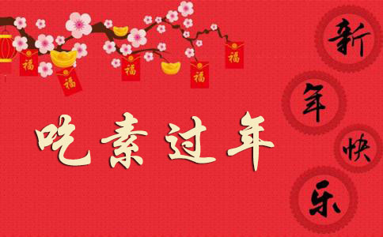

大凡普通人家过年逢节，总要办些大鱼大肉吃。因为我国的古训平日不能常吃肉的。古时天子诸侯无故不杀牛羊，士大夫无故不杀犬豸，庶人无故不食珍肴。所以我国人大多都是俭朴惯了，平日里总是省吃俭用，到了年节，就办些好吃的饮食，先供了祖宗然后让一家人大家吃得欢乐。这意思很不错的，至于供祖宗的意思，并不是说祖宗的灵魂要吃东西，不过是逢年过节，自己想到自身及一家的来由和现在的享用，就要记得祖宗父母遗留的德泽，顾复的慈恩，所以要备办饭菜先供祭了祖宗父母然后大家吃。虽明知祖宗不会吃，这忠厚的的意思是极好的。这供过的菜叫做馂余，又叫神福，就是分享祭神的福泽的意思。所以今人办酒肉，总说是办神福，这是古人逢年节吃些好菜的意思了。但是为什么我倒要劝人过年吃素呢？待我说出理由来。
第一层是我们平日里违悖古训，享用太过，应该在这特别的时节来补过忏悔。平常乡农人家，大多数平日吃蔬菜，我们居城市的，尤其那家境富裕的，平日天天吃鱼吃肉。有的人家还要杀鸡杀鸭，论起来我们住城市读书做生意的人，多半是四体不勤、无益于世的人。这享用是过分的，因为无功受享的缘故。所以受天理自然的裁制，就是刀兵、盗贼、疾病、争讼、烦恼，这几样事是城市的人格外多的。我们既然晓得有因果报应盈虚消长的道理，成为自然的裁制，我们就应该戒慎恐惧了。我们平日的享用既然都是太过分，到了年节大日子，应该借此自省自忏，所以应该吃素为是。
第二层是为的一家人免祸求福应该吃素的。除夕和元旦是一年的紧要日子，大家都要盼望家里人口清吉，家事顺遂，子孙繁盛，身体健康，总而言之，大家盼望来年凡事兴盛，同树木一样的欣欣向荣有生气就好。列位要晓得天理人心是相通的，善恶祥殃气类是互相感召的。我们想要家里人事兴旺有生气，要先从我们心里培植这种生气，又须知这种精神上的生气，总须从物质上的节制、欲念上的忍耐，方能有的。孔子说过“克己复礼为仁”，又说“仁者先难后获”。克己，就是克制自己的欲念，从凡百事物上来磨练，难舍处要舍，难忍处要忍，难行处要行。打破这难熬的关头，便到了成佛成圣的境界，这就叫“仁者先难后获”了。所以说一日克己复礼天下归仁焉，又说是致中和，天地位焉，万物育焉。这境界似乎太高，不容易领会，但是可以想见天人相通、万物一体、同声相应、同气相求的意思了。克制欲念才能培养这种生气，换句话说，顺从欲念就会戕贼生机。若问什么是欲念，就是眼、耳、鼻、舌、身、意六根所喜欢的物事，若是顺从它下去，就会发见骄奢淫逸的行为。这骄奢淫逸的结果，就是忿争、忧苦、病毒、败亡。这就是戕贼生机的证据了。克制欲念虽然要从眼耳鼻舌身意件件用功，但是最平常的就是口味。我们最容易犯容易体验的就是这舌根的欲念，所以要克制欲念的功夫，要从舌根入手。譬如教小孩子们说些克己制欲的话，他是不懂的，但是这节制口味的事，用不着多讲，就可在事实上施行受用的。从实际口味上常常克制忍耐，然后别的事也能够节制忍耐，这生机自然能常保存了。普通人不明白制欲功夫的紧要，当然不晓得吃素的深意，但是一经说明，我们不能不从早悔悟。若是难于立刻彻底实行，需要寻个入门方法，就是在这年节喜庆生日、大家希望好处的日子提醒这培养生机的意思。勉力把这一两天来试验，平日里顺从欲念戕贼生机太多，这天里特别克制欲念，不要拿万物的生命来供我的快意。只此一点年头，世界上就会添了生气。列位若是细玩此意，就会觉得舌头忍一日，心里安得多呢。
第三层为维持国民经济、图谋世界幸福，我们应该提倡年节喜庆吃素的。何以故呢？诸君要晓得各处乱事频仍，盗贼遍地。只有一个原因，就是财源枯窘、生计艰难。试看各国劳工运动、社会革命和种种的欺诈、战争杀戮，岂有别的原因吗？只是因为物产少、价格高、赚的钱不够生活，不得已要巧取力争。所以物少价高不够生活的原故，一是大家贪现成、懒操作；二是因为大家不知节制欲念、好吃大用。现在要大家各自节制欲念，自然是空言难行，但是若是从一种定期的、有方法的运动，就能多少有些补益。譬如我国四万万人，如果每人平均在过年过节多花一角钱吃食，就总共要多花四千万银钱，何况平均不止花一角呢。这样的钱花了不觉得，省了也不看见，但是在国民经济里面，实际上是在那里加减乘除的。如果一年三节省了几个一角，那总数就有一万几千万元呢。社会上多几担米多几斤肉。这米价肉价就会低落，若是缺少些，立刻价就涨高。现在既然事事昂贵，若是能提倡节俭，当然是物价会落下来，生活容易些，世界自然会安宁些了。有人说我们应该提倡实业、积极地生产，不要讲消极的节省。我告诉他说，要先能从消极的节制自己欲念的人，方才能做积极事业、替国民生产，否则别人所生产，都到了他肚子去了。所以若是不提倡消极的刻苦克己，连生产的工人都会没有了，现在的人喜欢当兵做匪、做政治生活，不喜欢种田做工，就是个铁证了。有的说你尽管提倡大家过年吃素，不但不会有四万万人信你的，连四十个人恐怕也有，若是只有几十个人照做，与国民有何裨益？我告诉他说，我们做事只要辨明义理应该不应该，不要管后来功效的高低大小，我却自信如果中国只有我一个人这样的做，中国国民也多少要受一点好影响的。
第四层为的是各处水灾兵灾，我们应该吃素。夏历五六月间，湖南、直隶、江西、福建、广东各省遭遇极大水灾，四川遭了水灾旱灾，江苏、浙江、直隶、河南等省遭兵灾，有多少人家连房屋都漂没了，烧完了。衣服被褥是没有了，吃的东西靠人赈济，款少人多，饿死冻死的仍旧不少，到了过年的时候，我们未被难的人家，合家团聚，大众快乐，他们被难的人家，身上冷、肚里饥，扶老牵幼的在风雪里受冻。再点一点人数，有的被枪炮打死，有的被兵匪杀死，水淹死、饿死、冻死的，或者父母不见，或者子女亡失，或者夫妻分散。我们试替他们想想，何等悲惨痛苦，我们虽然有的已经捐了几文钱，帮助赈济，但是要问一问我们的心，究竟已尽了么？我们虽然坐在屋里，眼不看见，但是明明知道这些灾区里，是有许多人没有衣食居处的，他们是必须靠人救济，否则要冻死饿死的。我们要再问我们自己，既然知道有许多人快死等救济，我们是不是没有力量帮助他们？我们若一千一百拿不出，是不是一元两元也拿不出？我们吃鱼吃肉是否从没减少一点？我们平日吃的不能稍微节省？到年底下特别增加的鱼肉酒菜，也是万不能省的吗？一面明知有人快饿死，一面我们自己来加倍吃喝作乐，彻底算起账来，这些饿死的人，虽然不是我们直接杀的，良心上是要负责任的。孟夫子说“疱有肥肉，厩有肥马，民有饥色，野有饿殍，同以挺与刃杀人是一样的”。我不敢劝列位因为这灾荒的原故，平日里不吃鱼肉。但是在耗费作乐的时节就可转过来，格外节省克己一点，替这些苦人表同情，并将省下来的钱帮助他们，那么问起心来，稍微可以安贴了。
根据以上四层意思，我就要劝我家各人在过年这两天吃素，把节省下来的几块钱做施舍用。我们祖上历代传下来的家风，就是元旦日日吃素。可见，祖上是深明这几层意思的。祖上修的行善使我们现在享其遗泽，我们废除这种好家风，真是可惜。但是现在来恢复，也不嫌晚的。或者问我说，你说祭祀祖考是要紧的，若是家里人都吃素，就用素菜祀祖，恐怕不诚敬吧！我告诉他说，祭祀祖考是孝子仁人之用心，但是不重在物质和形式的。《左传》有云：“黍稷非香，明德为香。”又云：“涧溪沼沚之毛，苹蘩蕴藻之菜，可荐于鬼神。”《易经》云：“东邻杀牛，不如西邻之禴祭，实受其福。”若是真出于报本追远之诚意，菜之有无且无关系，荤素更无问题了。若是因为自己的口腹之欲，反藉词于祖宗是吃荤的，杀生戕命，是明明归过于亲，就与古人善则归亲过则归己之意大相悖谬了。
人多言不能吃素，此习气为害耳。喉舌之嗜欲，不过为习气之一而已。下咽之顷，不肯稍忍须臾，盖为此习气所役使，而良心及清明之气失其主宰。若能发奋自胜，使良心不为此习气所以，即所谓克己复礼，亦即以理胜欲者矣。彼言不能者，曾否虚心自问否耶？以言好生之德，则杀群生以养己，生究为合理否耶？以言克己之功，孔子言“君子食无求饱”，又言“士志于道，不耻恶食”。又亟称大禹之菲饮食，颜子箪食瓢饮之贤。彼之为吃荤辩护者，讵非有顺从欲念之心存其间耶？以言养生，则少食肉之乡民，较多食肉之市人为强。以言智育德育，少食肉之东方民族，较之多食肉之民族，智慧为高、德性为醇，不亦甚显明耶？然则谓不能吃素者，舍欲念习气外，更有何说耶？日日为欲念习气所役而不能自胜，则以不肯清夜扪心平情推勘耳。一经推勘，则辩护之言，殆未能自慊于心矣。
予于此问题，推究颇深，详见于所作各文。但不可不知者，则予昔年亦好肉食之人也，予之食肉，养身之意为多。三十岁时，体弱似痨，故信西医说，多食牛肉，又听有人说，多食牛尾牛筋。如是者数年，竟无些许之益，衰颓成废人。宣统二年五月，表兄曾季融劝余罢一切补剂。其年六月，伍秩庸先生劝余除一切肉食。其效立见，诸病悉痊。近七年吃纯素以来，脑力尤远胜于前。昔年看书一日难毕十页，今则下笔数千言，不觉倦乏。予一切学问凡稍有寸进者，皆近数年事也。此则予所经验也。至予所觉为受益者，尤在因节制饮食而习练克制欲念，觉须打破此关而后能言克己之功耳。
录1925年《聂氏家言》第一辑
附：聂云台简介
聂云台（1880年10月－1953年12月12日）名其杰，字云台，法名慧杰，中国企业家。湖南衡阳人，曾国藩的外孙。母亲是曾国藩的小女儿曾纪芬。民国三十一、二年，聂云台先生撰写《保富法》一书，将自己一生的所见所闻，融合历史的经验教训，编成这本震撼人心的好书。目的在于提醒世人“如何才能真正的保有财富”，避免重蹈贪财者的覆辙。